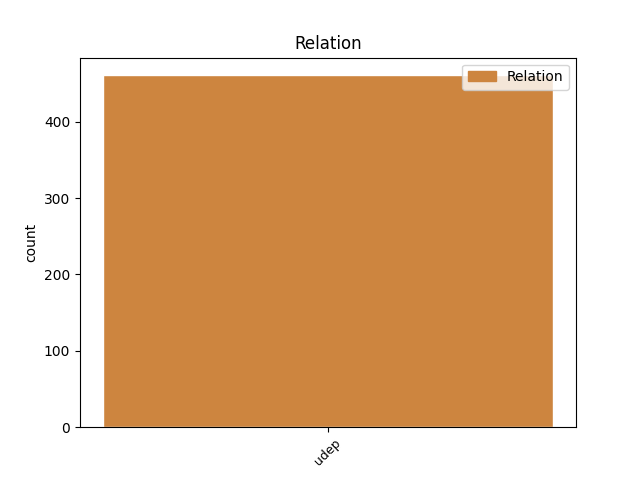
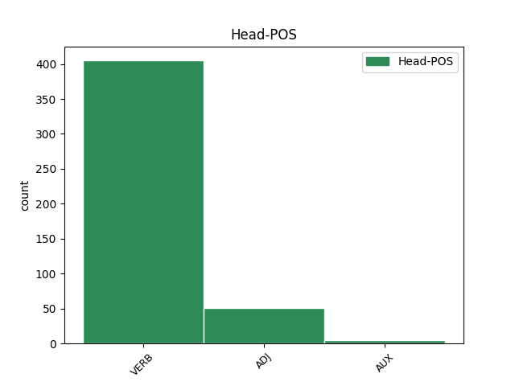
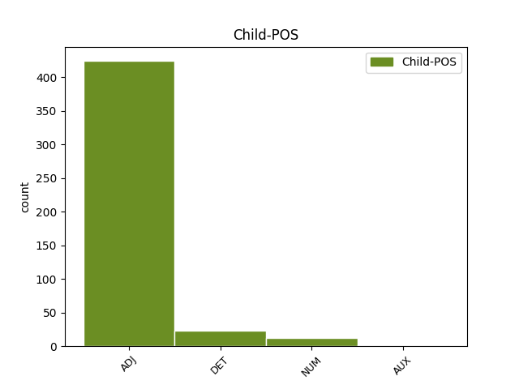

Distribution of features within this leaf



Agreement Rules sorted by frequency.
- When the dependent token is the underspecified dependency(udep) of the head token, and the dependent token is ADJ.
1 و _ _ _ _ 0 _ _ _
2 أشار _ _ _ _ 0 _ _ _
3 العيار _ _ _ _ 0 _ _ _
4 الى _ _ _ _ 0 _ _ _
5 استمرار _ _ _ _ 0 _ _ _
6 المساعدات _ _ _ _ 0 _ _ _
7 و _ _ _ _ 0 _ _ _
8 في _ _ _ _ 0 _ _ _
9 جميع _ _ _ _ 0 _ _ _
10 المجالات _ _ _ _ 0 _ _ _
11 الغذائية _ _ _ _ 0 _ _ _
12 و _ _ _ _ 0 _ _ _
13 الدوائية _ _ _ _ 0 _ _ _
14 و _ _ _ _ 0 _ _ _
15 الصحية _ _ _ _ 0 _ _ _
16 و _ _ _ _ 0 _ _ _
17 غير _ _ _ _ 0 _ _ _
18 ها _ _ _ _ 0 _ _ _
19 موضحا _ _ _ _ 0 _ _ _
20 أن _ _ _ _ 0 _ _ _
21 ما _ _ _ _ 0 _ _ _
22 يتعلق _ _ _ _ 0 _ _ _
23 ب _ _ _ _ 0 _ _ _
24 وزارة _ _ _ _ 0 _ _ _
25 الكهرباء _ _ _ _ 0 _ _ _
26 و _ _ _ _ 0 _ _ _
27 الماء _ _ _ _ 0 _ _ _
28 ف _ _ _ _ 0 _ _ _
29 إن _ _ _ _ 0 _ _ _
30 ها _ _ _ _ 0 _ _ _
31 لا _ _ _ _ 0 _ _ _
32 تزال _ _ _ _ 0 _ _ _
33 تقدم _ _ _ _ 0 _ _ _
34 المياه _ _ _ _ 0 _ _ _
35 العذبة _ _ _ _ 0 _ _ _
36 الى _ _ _ _ 0 _ _ _
37 العراق _ _ _ _ 0 _ _ _
38 " _ _ _ _ 0 _ _ _
39 ف _ _ _ _ 0 _ _ _
40 هناك _ _ _ _ 0 _ _ _
41 أنبوب _ _ _ _ 0 _ _ _
42 يصب صَبّ VERB VIIA-3MS-- Aspect=Imp|Gender=Masc|Mood=Ind|Number=Sing|Person=3|VerbForm=Fin|Voice=Act 0 _ _ _
43 يوميا يَومِيّ ADJ A-----MS4I Case=Acc|Definite=Ind|Gender=Masc|Number=Sing 42 udep _ Gloss=daily,on_a_daily_basis,per_diem|LTranslit=yawmīy|Root=y_w_m|Translit=yawmīyan|Vform=يَومِيًّا
44 في _ _ _ _ 0 _ _ _
45 العراق _ _ _ _ 0 _ _ _
46 ب _ _ _ _ 0 _ _ _
47 طاقة _ _ _ _ 0 _ _ _
48 مليون _ _ _ _ 0 _ _ _
49 و _ _ _ _ 0 _ _ _
50 نصف _ _ _ _ 0 _ _ _
51 المليون _ _ _ _ 0 _ _ _
52 جالون _ _ _ _ 0 _ _ _
53 " _ _ _ _ 0 _ _ _
54 . _ _ _ _ 0 _ _ _
1 و _ _ _ _ 0 _ _ _
2 أضاف _ _ _ _ 0 _ _ _
3 " _ _ _ _ 0 _ _ _
4 ان _ _ _ _ 0 _ _ _
5 ايا _ _ _ _ 0 _ _ _
6 من _ _ _ _ 0 _ _ _
7 ذلك _ _ _ _ 0 _ _ _
8 ليس _ _ _ _ 0 _ _ _
9 غلطة _ _ _ _ 0 _ _ _
10 الفلسطينيين _ _ _ _ 0 _ _ _
11 . _ _ _ _ 0 _ _ _
12 و _ _ _ _ 0 _ _ _
13 لٰكن _ _ _ _ 0 _ _ _
14 اذا _ _ _ _ 0 _ _ _
15 كان _ _ _ _ 0 _ _ _
16 التصور _ _ _ _ 0 _ _ _
17 أن _ _ _ _ 0 _ _ _
18 هم _ _ _ _ 0 _ _ _
19 كانوا _ _ _ _ 0 _ _ _
20 منتفعين _ _ _ _ 0 _ _ _
21 من _ _ _ _ 0 _ _ _
22 الحكومة _ _ _ _ 0 _ _ _
23 السابقة _ _ _ _ 0 _ _ _
24 ، _ _ _ _ 0 _ _ _
25 ف _ _ _ _ 0 _ _ _
26 قد _ _ _ _ 0 _ _ _
27 يعانون عَانَى VERB VIIA-3MP-- Aspect=Imp|Gender=Masc|Mood=Ind|Number=Plur|Person=3|VerbForm=Fin|Voice=Act 0 _ _ _
28 نتيجة _ _ _ _ 0 _ _ _
29 ل _ _ _ _ 0 _ _ _
30 ذٰلك ذٰلِكَ DET SD----MS2- Case=Gen|Gender=Masc|Number=Sing|PronType=Dem 27 udep _ Gloss=that,those|LTranslit=ḏālika|Root=k|Translit=ḏālika|Vform=ذٰلِكَ
31 . _ _ _ _ 0 _ _ _
32 و _ _ _ _ 0 _ _ _
33 هٰذا _ _ _ _ 0 _ _ _
34 من _ _ _ _ 0 _ _ _
35 بين _ _ _ _ 0 _ _ _
36 الاسباب _ _ _ _ 0 _ _ _
37 التى _ _ _ _ 0 _ _ _
38 تدعو _ _ _ _ 0 _ _ _
39 نا _ _ _ _ 0 _ _ _
40 ل _ _ _ _ 0 _ _ _
41 العودة _ _ _ _ 0 _ _ _
42 الى _ _ _ _ 0 _ _ _
43 بغداد _ _ _ _ 0 _ _ _
44 سريعا _ _ _ _ 0 _ _ _
45 ب _ _ _ _ 0 _ _ _
46 قدر _ _ _ _ 0 _ _ _
47 ما _ _ _ _ 0 _ _ _
48 يسمح _ _ _ _ 0 _ _ _
49 ب _ _ _ _ 0 _ _ _
50 ه _ _ _ _ 0 _ _ _
51 الوضع _ _ _ _ 0 _ _ _
52 الامنى _ _ _ _ 0 _ _ _
53 " _ _ _ _ 0 _ _ _
54 . _ _ _ _ 0 _ _ _
1 و _ _ _ _ 0 _ _ _
2 يقع _ _ _ _ 0 _ _ _
3 هذا _ _ _ _ 0 _ _ _
4 المستشفى _ _ _ _ 0 _ _ _
5 فى _ _ _ _ 0 _ _ _
6 ضاحية _ _ _ _ 0 _ _ _
7 بكين _ _ _ _ 0 _ _ _
8 الشمالية _ _ _ _ 0 _ _ _
9 و _ _ _ _ 0 _ _ _
10 في _ _ _ _ 0 _ _ _
11 ه _ _ _ _ 0 _ _ _
12 اكثر _ _ _ _ 0 _ _ _
13 من _ _ _ _ 0 _ _ _
14 1000 _ _ _ _ 0 _ _ _
15 سرير _ _ _ _ 0 _ _ _
16 . _ _ _ _ 0 _ _ _
17 قالت _ _ _ _ 0 _ _ _
18 صحيفة _ _ _ _ 0 _ _ _
19 / _ _ _ _ 0 _ _ _
20 قوانغمينغ _ _ _ _ 0 _ _ _
21 اليومية _ _ _ _ 0 _ _ _
22 / _ _ _ _ 0 _ _ _
23 ان _ _ _ _ 0 _ _ _
24 محطة _ _ _ _ 0 _ _ _
25 التلفزيون _ _ _ _ 0 _ _ _
26 المركزية _ _ _ _ 0 _ _ _
27 / _ _ _ _ 0 _ _ _
28 سى _ _ _ _ 0 _ _ _
29 سى _ _ _ _ 0 _ _ _
30 تى _ _ _ _ 0 _ _ _
31 فى _ _ _ _ 0 _ _ _
32 / _ _ _ _ 0 _ _ _
33 س _ _ _ _ 0 _ _ _
34 تقدم _ _ _ _ 0 _ _ _
35 البرامج _ _ _ _ 0 _ _ _
36 الملونة _ _ _ _ 0 _ _ _
37 فى _ _ _ _ 0 _ _ _
38 عيد _ _ _ _ 0 _ _ _
39 العمال _ _ _ _ 0 _ _ _
40 العالمى _ _ _ _ 0 _ _ _
41 الذى _ _ _ _ 0 _ _ _
42 يدوم دَام VERB VIIA-3MS-- Aspect=Imp|Gender=Masc|Mood=Ind|Number=Sing|Person=3|VerbForm=Fin|Voice=Act 0 _ _ _
43 خمسة خَمسَة NUM QV----M-4R Case=Acc|Definite=Cons|Gender=Masc|NumForm=Word|NumValue=3 42 udep _ Gloss=five|LTranslit=ḫamsat|Root=_h_m_s|Translit=ḫamsata|Vform=خَمسَةَ
44 ايام _ _ _ _ 0 _ _ _
45 . _ _ _ _ 0 _ _ _
1 و _ _ _ _ 0 _ _ _
2 في _ _ _ _ 0 _ _ _
3 خطاب _ _ _ _ 0 _ _ _
4 ألقى _ _ _ _ 0 _ _ _
5 ه _ _ _ _ 0 _ _ _
6 امام _ _ _ _ 0 _ _ _
7 قيادة _ _ _ _ 0 _ _ _
8 الاتحاد _ _ _ _ 0 _ _ _
9 النسائي _ _ _ _ 0 _ _ _
10 السوداني _ _ _ _ 0 _ _ _
11 قال _ _ _ _ 0 _ _ _
12 الفريق _ _ _ _ 0 _ _ _
13 البشير _ _ _ _ 0 _ _ _
14 إن _ _ _ _ 0 _ _ _
15 ه _ _ _ _ 0 _ _ _
16 " _ _ _ _ 0 _ _ _
17 مستعد مُستَعِدّ ADJ A-----MS1I Case=Nom|Definite=Ind|Gender=Masc|Number=Sing 0 _ _ _
18 ل _ _ _ _ 0 _ _ _
19 التوقيع _ _ _ _ 0 _ _ _
20 على _ _ _ _ 0 _ _ _
21 اتفاق _ _ _ _ 0 _ _ _
22 سلام _ _ _ _ 0 _ _ _
23 ( _ _ _ _ 0 _ _ _
24 مع _ _ _ _ 0 _ _ _
25 الجنوب _ _ _ _ 0 _ _ _
26 ) _ _ _ _ 0 _ _ _
27 اليوم _ _ _ _ 0 _ _ _
28 و _ _ _ _ 0 _ _ _
29 ليس لَيس AUX VP-A-3MS-- Aspect=Perf|Gender=Masc|Number=Sing|Person=3|Voice=Act 17 udep _ Gloss=be_not,is_not|LTranslit=lays|Root=l_y_s|Translit=laysa|Vform=لَيسَ
30 غدا _ _ _ _ 0 _ _ _
31 " _ _ _ _ 0 _ _ _
32 و _ _ _ _ 0 _ _ _
33 ذٰلك _ _ _ _ 0 _ _ _
34 في _ _ _ _ 0 _ _ _
35 رد _ _ _ _ 0 _ _ _
36 على _ _ _ _ 0 _ _ _
37 اتهام _ _ _ _ 0 _ _ _
38 زعيم _ _ _ _ 0 _ _ _
39 الجيش _ _ _ _ 0 _ _ _
40 الشعبي _ _ _ _ 0 _ _ _
41 ل _ _ _ _ 0 _ _ _
42 تحرير _ _ _ _ 0 _ _ _
43 السودان _ _ _ _ 0 _ _ _
44 جون _ _ _ _ 0 _ _ _
45 قرنق _ _ _ _ 0 _ _ _
46 حكومة _ _ _ _ 0 _ _ _
47 الخرطوم _ _ _ _ 0 _ _ _
48 ب _ _ _ _ 0 _ _ _
49 المماطلة _ _ _ _ 0 _ _ _
50 في _ _ _ _ 0 _ _ _
51 التوقيع _ _ _ _ 0 _ _ _
52 على _ _ _ _ 0 _ _ _
53 اتفاق _ _ _ _ 0 _ _ _
54 سلام _ _ _ _ 0 _ _ _
55 من _ _ _ _ 0 _ _ _
56 اجل _ _ _ _ 0 _ _ _
57 استغلال _ _ _ _ 0 _ _ _
58 موارد _ _ _ _ 0 _ _ _
59 النفط _ _ _ _ 0 _ _ _
60 ل _ _ _ _ 0 _ _ _
61 فترة _ _ _ _ 0 _ _ _
62 اطول _ _ _ _ 0 _ _ _
63 نظرا _ _ _ _ 0 _ _ _
64 ل _ _ _ _ 0 _ _ _
65 ارتفاع _ _ _ _ 0 _ _ _
66 أسعار _ _ _ _ 0 _ _ _
67 ه _ _ _ _ 0 _ _ _
68 حاليا _ _ _ _ 0 _ _ _
69 . _ _ _ _ 0 _ _ _
Disagree Examples:
1 و _ _ _ _ 0 _ _ _
2 كان _ _ _ _ 0 _ _ _
3 المتحدث _ _ _ _ 0 _ _ _
4 الاميركي _ _ _ _ 0 _ _ _
5 اشار _ _ _ _ 0 _ _ _
6 امس _ _ _ _ 0 _ _ _
7 الى _ _ _ _ 0 _ _ _
8 ان _ _ _ _ 0 _ _ _
9 محادثات _ _ _ _ 0 _ _ _
10 قمة _ _ _ _ 0 _ _ _
11 كامب _ _ _ _ 0 _ _ _
12 ديفيد _ _ _ _ 0 _ _ _
13 اتسمت _ _ _ _ 0 _ _ _
14 ب _ _ _ _ 0 _ _ _
15 طابع _ _ _ _ 0 _ _ _
16 اقل أَقَلّ ADJ A-----MS2I Case=Gen|Definite=Ind|Gender=Masc|Number=Sing 0 _ _ _
17 رسمية رَسمِيّ ADJ A-----FS4I Case=Acc|Definite=Ind|Gender=Fem|Number=Sing 16 udep _ Gloss=official|LTranslit=rasmīy|Root=r_s_m|Translit=rasmīyatan|Vform=رَسمِيَّةً
18 من _ _ _ _ 0 _ _ _
19 الايام _ _ _ _ 0 _ _ _
20 السابقة _ _ _ _ 0 _ _ _
21 ب _ _ _ _ 0 _ _ _
22 سبب _ _ _ _ 0 _ _ _
23 العطلة _ _ _ _ 0 _ _ _
24 الاسبوعية _ _ _ _ 0 _ _ _
25 لدى _ _ _ _ 0 _ _ _
26 اليهود _ _ _ _ 0 _ _ _
27 . _ _ _ _ 0 _ _ _
1 و _ _ _ _ 0 _ _ _
2 أخيرا أَخِير ADJ A-----MS4I Case=Acc|Definite=Ind|Gender=Masc|Number=Sing 3 udep _ Gloss=last,latest,latter,recent|LTranslit=ʾaḫīr|Root='__h_r|Translit=ʾaḫīran|Vform=أَخِيرًا
3 اشارت أَشَار VERB VP-A-3FS-- Aspect=Perf|Gender=Fem|Number=Sing|Person=3|Voice=Act 0 _ _ _
4 الدراسة _ _ _ _ 0 _ _ _
5 الى _ _ _ _ 0 _ _ _
6 ان _ _ _ _ 0 _ _ _
7 41،5 _ _ _ _ 0 _ _ _
8 % _ _ _ _ 0 _ _ _
9 من _ _ _ _ 0 _ _ _
10 النساء _ _ _ _ 0 _ _ _
11 اللواتي _ _ _ _ 0 _ _ _
12 يتعرضن _ _ _ _ 0 _ _ _
13 ل _ _ _ _ 0 _ _ _
14 العنف _ _ _ _ 0 _ _ _
15 الجسدي _ _ _ _ 0 _ _ _
16 من _ _ _ _ 0 _ _ _
17 قبل _ _ _ _ 0 _ _ _
18 شريك _ _ _ _ 0 _ _ _
19 حميم _ _ _ _ 0 _ _ _
20 ، _ _ _ _ 0 _ _ _
21 اصبن _ _ _ _ 0 _ _ _
22 ب _ _ _ _ 0 _ _ _
23 جروح _ _ _ _ 0 _ _ _
24 خلال _ _ _ _ 0 _ _ _
25 تعرض _ _ _ _ 0 _ _ _
26 هن _ _ _ _ 0 _ _ _
27 ل _ _ _ _ 0 _ _ _
28 الاعتداء _ _ _ _ 0 _ _ _
29 الاخير _ _ _ _ 0 _ _ _
30 مقابل _ _ _ _ 0 _ _ _
31 19،9 _ _ _ _ 0 _ _ _
32 % _ _ _ _ 0 _ _ _
33 ل _ _ _ _ 0 _ _ _
34 الرجال _ _ _ _ 0 _ _ _
35 . _ _ _ _ 0 _ _ _
1 و _ _ _ _ 0 _ _ _
2 أضافت _ _ _ _ 0 _ _ _
3 ان _ _ _ _ 0 _ _ _
4 الترتيبات _ _ _ _ 0 _ _ _
5 س _ _ _ _ 0 _ _ _
6 تتيح _ _ _ _ 0 _ _ _
7 ل _ _ _ _ 0 _ _ _
8 العائلات _ _ _ _ 0 _ _ _
9 خصوصا _ _ _ _ 0 _ _ _
10 الفلسطينية _ _ _ _ 0 _ _ _
11 ان _ _ _ _ 0 _ _ _
12 تلتقي _ _ _ _ 0 _ _ _
13 ب _ _ _ _ 0 _ _ _
14 طريقة _ _ _ _ 0 _ _ _
15 اكثر أَكثَر ADJ A-----MS2I Case=Gen|Definite=Ind|Gender=Masc|Number=Sing 0 _ _ _
16 انسانية إِنسَانِيّ ADJ A-----FS4I Case=Acc|Definite=Ind|Gender=Fem|Number=Sing 15 udep _ Gloss=human,humane|LTranslit=ʾinsānīy|Root='_n_s|Translit=ʾinsānīyatan|Vform=إِنسَانِيَّةً
17 مع _ _ _ _ 0 _ _ _
18 توفير _ _ _ _ 0 _ _ _
19 الحد _ _ _ _ 0 _ _ _
20 الادنى _ _ _ _ 0 _ _ _
21 من _ _ _ _ 0 _ _ _
22 الراحة _ _ _ _ 0 _ _ _
23 . _ _ _ _ 0 _ _ _
1 من _ _ _ _ 0 _ _ _
2 جهة _ _ _ _ 0 _ _ _
3 اخرى _ _ _ _ 0 _ _ _
4 قال _ _ _ _ 0 _ _ _
5 نائب _ _ _ _ 0 _ _ _
6 رئيس _ _ _ _ 0 _ _ _
7 الوزراء _ _ _ _ 0 _ _ _
8 ايليا _ _ _ _ 0 _ _ _
9 كليبانوف _ _ _ _ 0 _ _ _
10 ان _ _ _ _ 0 _ _ _
11 البحرية _ _ _ _ 0 _ _ _
12 تعتزم _ _ _ _ 0 _ _ _
13 اجلاء _ _ _ _ 0 _ _ _
14 طاقم _ _ _ _ 0 _ _ _
15 الغواصة _ _ _ _ 0 _ _ _
16 الا _ _ _ _ 0 _ _ _
17 ان _ _ _ _ 0 _ _ _
18 العاصفة _ _ _ _ 0 _ _ _
19 تحول حَال VERB VIIA-3FS-- Aspect=Imp|Gender=Fem|Mood=Ind|Number=Sing|Person=3|VerbForm=Fin|Voice=Act 0 _ _ _
20 حاليا حَالِيّ ADJ A-----MS4I Case=Acc|Definite=Ind|Gender=Masc|Number=Sing 19 udep _ Gloss=current,present|LTranslit=ḥālīy|Root=.h_w_l|Translit=ḥālīyan|Vform=حَالِيًّا
21 دون _ _ _ _ 0 _ _ _
22 القيام _ _ _ _ 0 _ _ _
23 ب _ _ _ _ 0 _ _ _
24 ذٰلك _ _ _ _ 0 _ _ _
25 . _ _ _ _ 0 _ _ _
1 و _ _ _ _ 0 _ _ _
2 رأى _ _ _ _ 0 _ _ _
3 بيلين _ _ _ _ 0 _ _ _
4 أن _ _ _ _ 0 _ _ _
5 ه _ _ _ _ 0 _ _ _
6 يمكن _ _ _ _ 0 _ _ _
7 التوصل _ _ _ _ 0 _ _ _
8 ب _ _ _ _ 0 _ _ _
9 نجاح _ _ _ _ 0 _ _ _
10 الى _ _ _ _ 0 _ _ _
11 اتفاق _ _ _ _ 0 _ _ _
12 ب _ _ _ _ 0 _ _ _
13 مساعدة _ _ _ _ 0 _ _ _
14 المبعوث _ _ _ _ 0 _ _ _
15 الاميركي _ _ _ _ 0 _ _ _
16 دنيس _ _ _ _ 0 _ _ _
17 روس _ _ _ _ 0 _ _ _
18 الذي _ _ _ _ 0 _ _ _
19 ينتظر _ _ _ _ 0 _ _ _
20 وصول _ _ _ _ 0 _ _ _
21 ه _ _ _ _ 0 _ _ _
22 الى _ _ _ _ 0 _ _ _
23 اسرائيل _ _ _ _ 0 _ _ _
24 في _ _ _ _ 0 _ _ _
25 20 _ _ _ _ 0 _ _ _
26 اب _ _ _ _ 0 _ _ _
27 / _ _ _ _ 0 _ _ _
28 اغسطس _ _ _ _ 0 _ _ _
29 على _ _ _ _ 0 _ _ _
30 ان _ _ _ _ 0 _ _ _
31 توضع _ _ _ _ 0 _ _ _
32 لمسات _ _ _ _ 0 _ _ _
33 ه _ _ _ _ 0 _ _ _
34 الاخيرة _ _ _ _ 0 _ _ _
35 فى _ _ _ _ 0 _ _ _
36 قمة _ _ _ _ 0 _ _ _
37 جديدة _ _ _ _ 0 _ _ _
38 " _ _ _ _ 0 _ _ _
39 لن _ _ _ _ 0 _ _ _
40 تطول طَال VERB VISA-3FS-- Aspect=Imp|Gender=Fem|Mood=Sub|Number=Sing|Person=3|VerbForm=Fin|Voice=Act 0 _ _ _
41 اكثر أَكثَر ADJ A-----MS4R Case=Acc|Definite=Cons|Gender=Masc|Number=Sing 40 udep _ Gloss=more,most|LTranslit=ʾakṯar|Root=k__t_r|Translit=ʾakṯara|Vform=أَكثَرَ
42 من _ _ _ _ 0 _ _ _
43 يوم _ _ _ _ 0 _ _ _
44 او _ _ _ _ 0 _ _ _
45 يومين _ _ _ _ 0 _ _ _
46 " _ _ _ _ 0 _ _ _
47 . _ _ _ _ 0 _ _ _